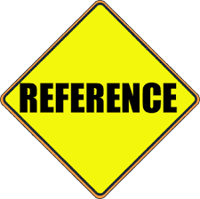
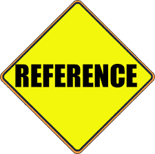

The Twelve Pillars by Jim Rohn and Chris Widener
Summary of Chapters 4 - 7
|
Chapter 4
|
Achieve Your Goals
In this chapter, Charlie explains to Micheal that setting goals is an important step in becoming a more successful person. He explains that setting a goal requires that he has to do two(2) things:
- Think about the goal he wants to achieve
- Write it down
He went further to explain that he could categorize goals into three(3) groups:
- Long Term goals
- Mid-Term goals
- Short Term goals (Micro goals)
Charlie also expressed upon Michael that the benefit of setting goals was not just to achieve the goals themselves, but to use them as a means to become a person who can achieve them.
I have never really been one to think much of my goals other than that I'm moving towards my main one. Upon reading this chapter, I tried writng down that goal, as well as a few of the other goals I had just kept floating arounf my mind. I must say, Charlie was right when he said "there is power in writing down your goals". My mind has gotten a less abstract path to follow, making my dreams feel more attainable, and due dates for assignmens easier to be met.
|
Chapter 5
|
The Proper Use of Time
Chapter 5 of the novel speaks about the value there is in everyday we are alive. Charlie makes reference to his experiences to say that everyone shall surely die sooner than they'd wish to, and that the pain of descipline weighs less than the pain of regret. He told Micheal about the many opportunities that each day comes with, and implored Micheal to spend his days wisely on the best opportunity that each day offers. Micheal who was puzzled by this and inquired more about how would he know which opportunity was the best one, and he was given an answer that implied that the best opportunity was the opportunity that was most in line with his overall goals.
Being a college student with assignments and duedates, personal issues and the lack of power to get to my futures goals quickly, I acquired deep wisdom from this chapter especially. Charlie spoke about how we must be the designer of our own lives, or else we could risk being a part of someone else's design. Being knowledgeable of this now, I plan to give further improvement on my time management skills, as well as give deep thought to my priorities. I may have a lot on my shoulders, but if I should prioritize the important things over the urgent, then I am sure I can make the weight I will be carrying onwards only deciplinary ounces heavier instead of regretful tons heavier.
|
Chapter 6
|
Sorround Yourself With the Best People
In this chapter, Charlie explains to Michael the importance of sorrounding himself with people who can positively affect him. He conveys that the people around him can influence him little by little by affecting his attitude. He therefore suggested that Michael categorize the people around him into three(3) categories depending on their effect on him:
- Those who he should disassociate with
- Those who he should limitedly associate with
- Those who he should expand association with
Charlie then went on to give advise that in order to attract better associates, he should make himself more attractive. By doing that and attracting a good crowd, it expands his network as their friends become his and he will change for the better.
Having being around many different types of people growing up, I have gained first-hand experience on how different people can affect your attitude. As Charlie expressed, some people are of no benefit to one's progress in life, and as such, it is best to disassociate with them, even if it is a hard choice to make. I have observed that some of the worst times in my life was when I either had no one, or I did not have anyone who made moves to better their situations. In late high school and since starting college however, I realized that compared to the times before then, I have started to attract people who work hard, people who are serious about their future and overall, people who seek better for themselves and those around them. Our attitudes have intertwined and just as Charlie implied, this makes me even more motivated to achieve my goals and help them achieve theirs.
|
Chapter 7
|
Be A Life-Long Learner
In this chapter, Michael is taught the importances of both formal and self education. He describes formal education as the things one could learn in college, the time of education that can help them get by in life. He then described self education as the things one teaches themselves and spend their life expanding their knowledge on, and this is what could bring forth fortunes. Charlie also encouraged Michael to read alot of books as they are tools that can expand the horizons of one's knowledge and opens up vast new worlds to the mind.
An observation I have made throughout the years is that most of the most successful people in the world did not rely entirely on the courses that schools offered, but instead on things that they learn and pick up throughout their lives. There is an innumerable amount of books across the globe, and in this day and age, technology has provided even more options for opening up one's mind to the world of others. This being the case, expanding my mind through research is not an impossible task. There is so much more to being successful than what can fit into a school's curriculum, and people are made to learn everyday. In other words, just as a tree was made to grow in height a little more everyday, humans are made to grow in mind everyday, and growth is rarely stopped until the death arrives.
|
|
How can I apply what I've read to my life
As a computer science sophomore, the lessons from "Twelve Pillars" offer valuable guidance for my academic, personal, and professional development such as:
- *Building Relationships*: Cultivating strong connections with peers, professors, and mentors will support my growth and open doors to opportunities such as internships and job prospects.
- *Goal Setting*: I can apply the principle of setting clear, actionable goals to improve academically and professionally, like mastering programming languages or securing internships, by breaking these goals into achievable steps.
- *Time Management*: Prioritizing tasks through effective time management will help me balance studies, coding practice, and rest, reducing stress and enhancing productivity.
- *Positive Influences*: Surrounding myself with motivated peers and seeking mentorship from experienced professionals will keep me focused and drive my success in computer science.
By applying these principles, I can lay a strong foundation for my academic and career success.
|
Degree and Skill Requirements
I am working towards a degree in Computer Science. So far, the top three skills I have acquired include:
- *Programming and Problem-Solving*: Through learning languages like Python, Java, or C++, I’ve developed the ability to write efficient code and solve complex problems.
- *Data Structures and Algorithms*: Understanding how data is organized and manipulated, along with mastering algorithms, is fundamental for creating optimized solutions in various coding tasks.
- *Logical and Analytical Thinking*: Computer science has strengthened my ability to approach problems logically and think critically, breaking down large problems into smaller, manageable components.
|
|


 



|